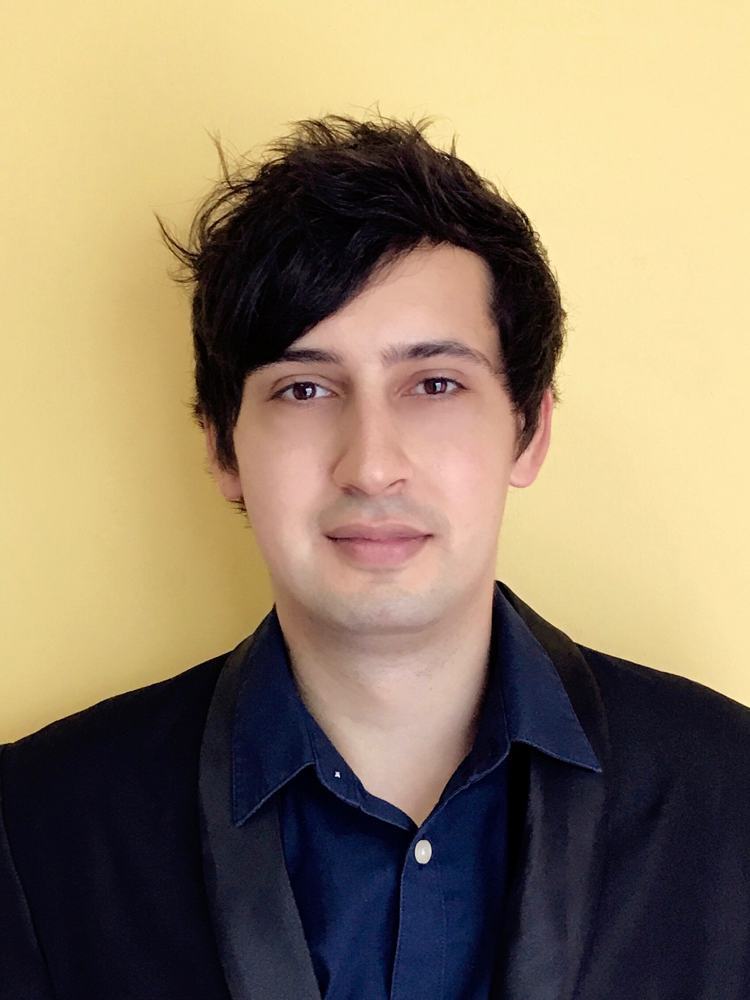

Contact Us
Dan Daniel

I am interested in software engineering and strive for neat and reusable code. Big fan of Object Oriented Paradigm, Frame Technology and keeping an open mind for new approaches and technologies which are making software development, maintainability and reuse easier.
I am passionate about helping developers gaining more results with less effort. Trying to find new and better ways to automate common everyday programming tasks and help them focus on the more important and rewarding tasks.
I am participating in research projects, tool and language development to help in gaining a deeper understanding of the topic and applying the ideas in real life large-scale software systems.
I have completed a Master's degree in Hungary, at the University of Szeged, where I've been working at the Faculty of Science and Informatics as Teaching Assistant and at the Software Engineering Department as Research Assistant.
Currently I am living in – the little red dot – Singapore with my wife.
You can download my CV if you wish to know more.
You can also find me on these virtual places:
My Stack Overflow
My LinkedIn
Stanislaw Jarzabek
Stan Jarzabek has been working on techniques for software reuse since 1997. His team developed XVCL (XML-based Variant Configuration Language), a variability management technique for software reuse in 2000. Since then, XVCL has been applied in lab studies and industrial projects with results published at major software engineering forums (a study of redundancies in Buffer library with XVCL won ACM Best Paper Award; industrial projects with XVCL were published at ICSE and FSE). XVCL later evolved to a more flexible system called ART (Adaptive Reuse Technique)
Stan’s long-term research interest is software engineering (software reuse and maintenance), and in recent years mHealth – use of mobile technology to improve delivery of healthcare.
Stan received MSc and PhD from Warsaw University. He has been a Professor at Bialystok University of Technology since 2015; in 1992-2015 he was an Associate Professor at the Department of Computer Science, National University of Singapore; in 1990-92 he was a Research Manager of CSA Research Ltd in Singapore. Before, Stan taught at McMaster University, Canada and worked for industrial research institute in Warsaw.
Stan's Bio